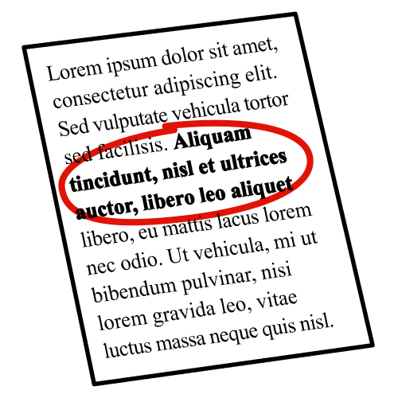
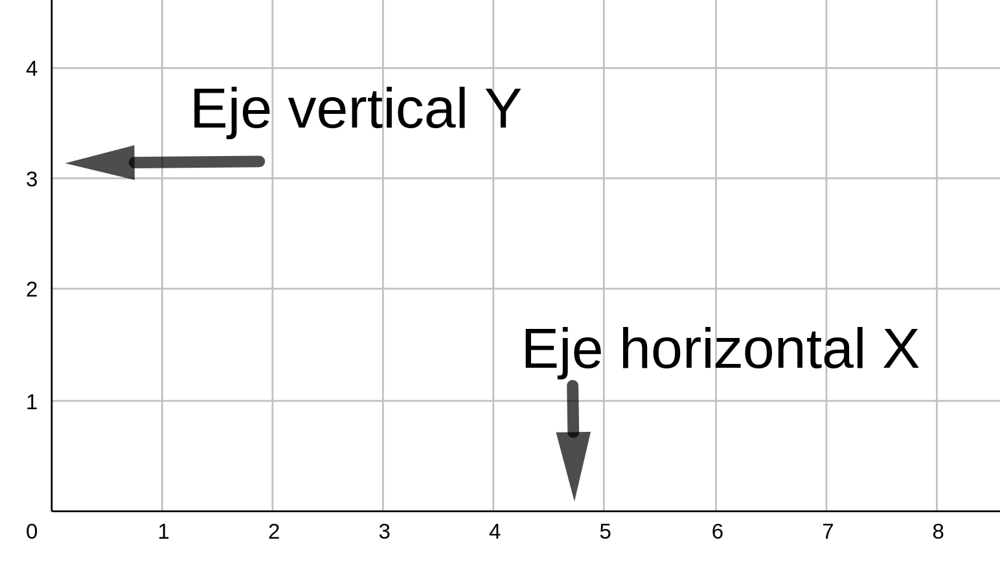
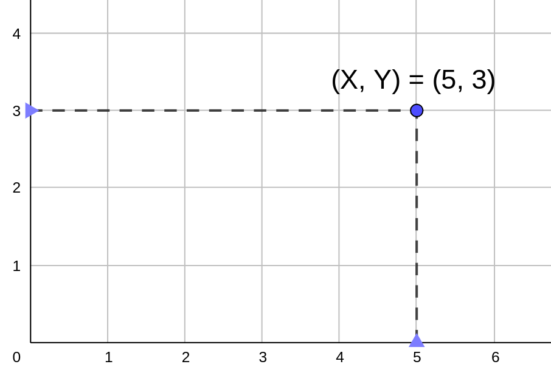
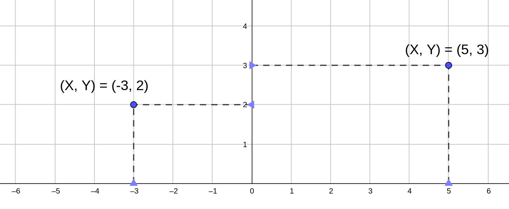
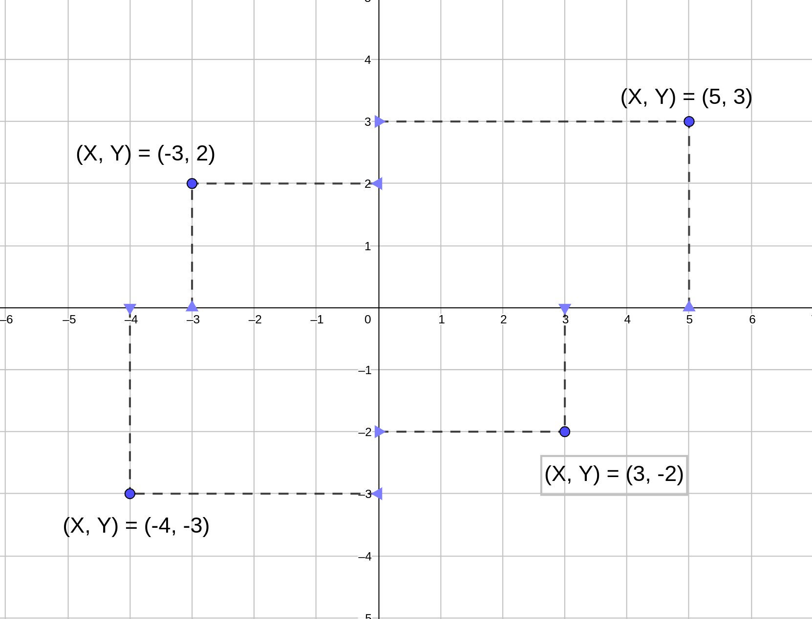
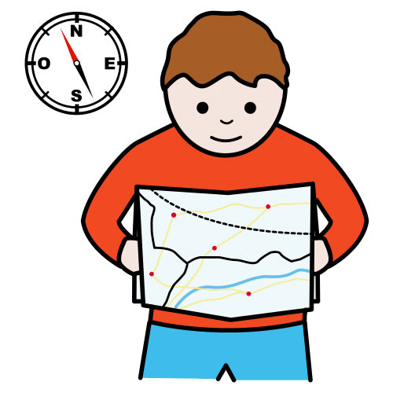
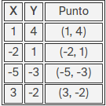
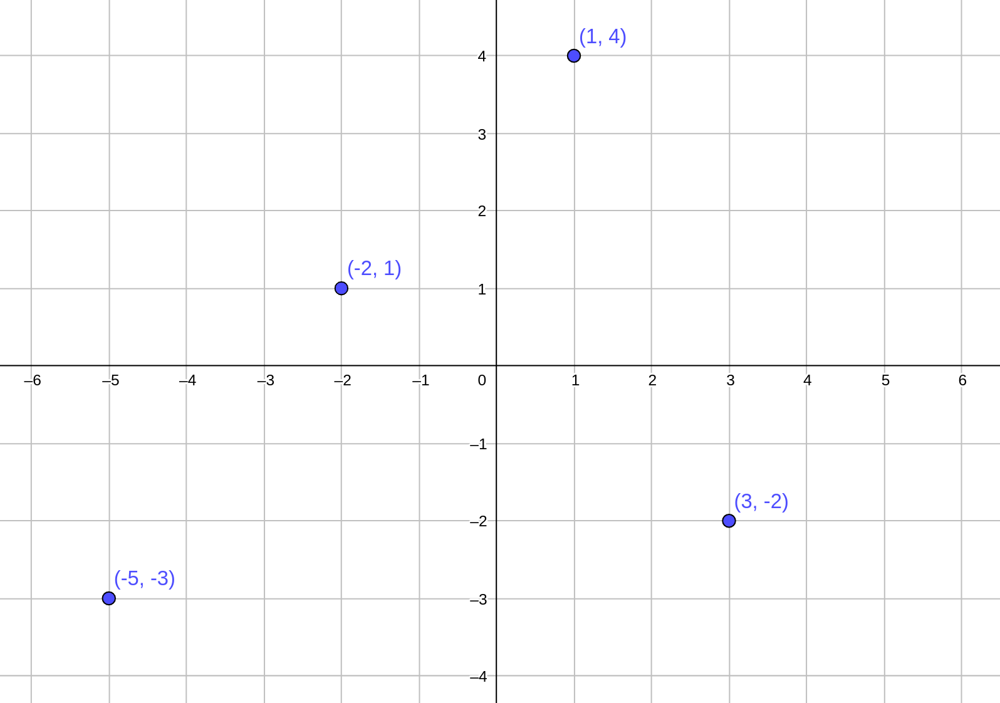
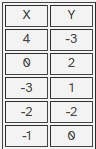

Matemágicas: ¿Te atreves a crear códigos secretos?
4.1 Mensaje oculto en el plano
Diccionario
Fundamental

Definición:
Que sirve de fundamento o es lo principal en algo.
Ejemplo:
Tuvimos que escribir las ideas fundamentales de la lectura.
Trazar
Definición:
Acción de escribir o dibujar con líneas o rayas.
Ejemplo:
Para trazar la recta que unía los dos puntos tuvimos que utilizar una regla.
Vamos a desarrollar los conceptos matemáticos necesarios para poder entender y usar estas herramientas matemáticas en proyectos futuros. En este caso te pediré que copies en tu cuaderno la teoría que daremos en el punto 4. Ésto te ayudará a asimilar estos conceptos matemáticos tan útiles.
Definición:
Acción de escribir o dibujar con líneas o rayas.
Ejemplo:
Para trazar la recta que unía los dos puntos tuvimos que utilizar una regla.
1. Los puntos en el plano
Ejes
La cuadrícula que nos ha aparecido varias veces resulta ser fundamental. Está formada por dos líneas perpendiculares que se cortan en un punto.
A estas líneas se le conocen como los ejes de coordenadas, y normalmente se representan con las letras X e Y.
El eje horizontal se conoce como eje X y el eje vertical como eje Y.

Coordenadas
Para localizar un lugar anotamos los pasos que hay que dar hacia la derecha y hacia arriba para llegar hasta él.
Esta pareja de números, se llaman coordenadas, y se representan por (X, Y).

Primero hay que leer y localizar el valor de la coordenada X y luego el de la coordenada Y. Así, en la imagen anterior se localiza el punto X = 5 e Y = 3 → (5, 3)
Hay que leer y localizar el valor de la coordenada X y luego el de la coordenada Y. Así, en la imagen anterior se localiza el punto X = 5 e Y = 3 → (5, 3)
Negativas en X
Pero también nos podríamos haber movido hacia la izquierda, y en ese caso se utilizan coordenadas con valor negativo, todo depende de donde esté situado el origen de coordenadas.
En este ejemplo se localiza un punto con la coordenada X negativa ya que está a la izquierda del 0 → (X, Y) = (-3, 2)

Negativas en Y
Pero también podríamos movernos hacia abajo, en ese caso tendremos que la coordenada Y será negativa.
En este ejemplo se localiza un punto con la coordenadas positivas y negativas de X e Y → (X, Y) = (5, 3); (X, Y) = (-3, 2); (X, Y) = (-4, -3); (X, Y) = (3, -2)

Definición:
Que sirve de fundamento o es lo principal en algo.
Ejemplo:
Tuvimos que escribir las ideas fundamentales de la lectura.
Lectura facilitada
En un mapa nos podemos orientar según sus coordenadas cartesianas.
La línea horizontal es representada por la letra X.
La línea vertical es representada por la letra Y.
Si nos movemos hacia la derecha o hacia arriba, a partir del cero, son valores positivos.
Si nos movemos hacia la izquierda o hacia abajo, a partir del cero, son valores negativos.

Definición:
fijar la posición o dirección de algo respecto de un lugar
Ejemplo:
El ejercicio nos pedía que nos orientásemos en el mapa para llegar hasta la cueva del gato.
2. Tu primer mensaje oculto
En esta actividad podrás conocer, descifrar y utilizar los principales elementos del plano para crear tu primer mensaje oculto.
Fíjate bien en todos los pasos porque con lo que puedes aprender con esta actividad fácilmente podrás crear y descifrar tu primer mensaje secreto.
Vamos a situarnos
En esta actividad tienes que colocar cada punto en el lugar del plano que le corresponde.
Fíjate en las coordenadas (X, Y) y arrastra cada punto a la posición correspondiente en el plano cartesiano.
Para poder evaluar correctamente la actividad y comprobar si lo has hecho bien, debes mover los cuatro puntos.
Cada respuesta correcta son 25 puntos, ¡seguro que eres capaz de conseguir 100!
Fíjate en los valores de las coordenadas X e Y dados en la siguiente tabla y cómo escribir el punto que hay que localizar en el plano:

Ahora los puedes localizar en el plano
Una vez has escrito los puntos con los valores de sus coordenadas, puedes representarlos en el plano cartesiano. Recuerda que primero se localiza el valor en el eje X (horizontal) y luego la altura en el eje Y (vertical).

Ahora te toca a ti
Fíjate en los datos que aparecen en la siguiente tabla, escribe los puntos, dibuja unos ejes de coordenadas en tu cuaderno y localízalos en el plano:

¿Los has localizado correctamente?
Fíjate en la solución para saber si lo has hecho bien: